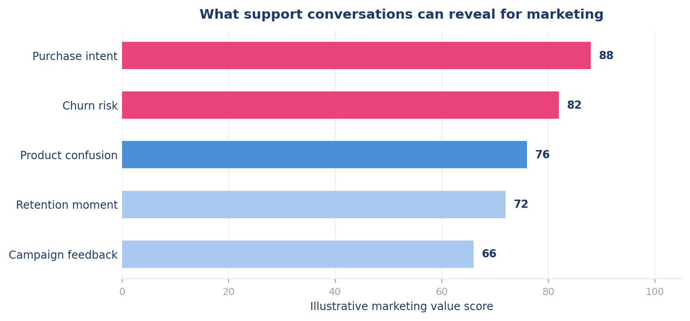
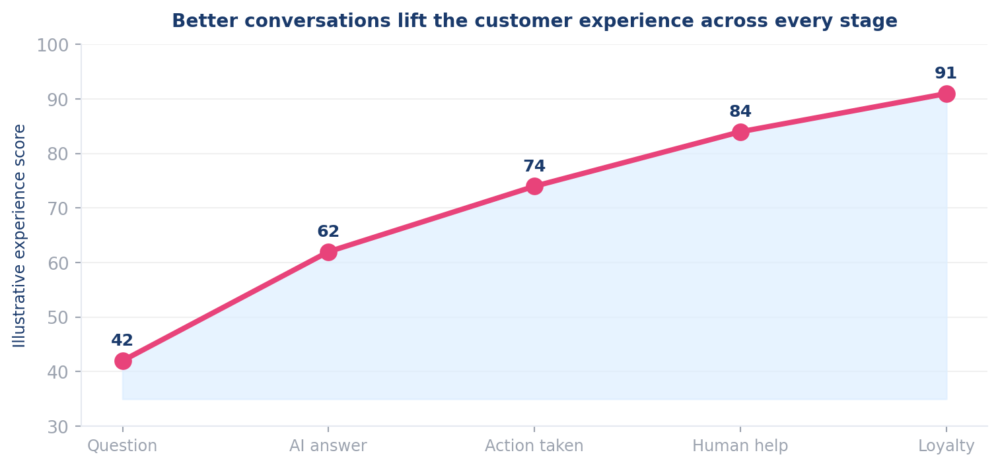

How support conversations become customer signals
Khyati Parihar · June 2026
They expect instant answers across chat, email, social, and apps — right now.
Teams operate in silos with limited shared customer context across departments.
A slow or cold support experience becomes a lasting negative marketing impression.
Core idea: Customer service is not separate from marketing — it is one of the most direct and underused brand touchpoints.
It understands the reason behind a message, not just the words.
Complex or emotional cases are routed to human agents who can show empathy.
Every conversation becomes a signal for marketing, retention, and product teams.
At Netomi, the key lesson was simple: AI support works best when it feels invisible.
Resolve common questions instantly — no hold music, no wait times.
Connect the conversation to the right workflow, knowledge base, or escalation path.
Escalate gracefully when the customer needs empathy, judgment, or an exception.

Values are illustrative — relative marketing usefulness, not measured performance.

Conversations reveal what the customer needs right now — not last quarter.
Frustration signals surface before customers churn — giving teams time to act.
Repeated questions expose what is confusing, missing, or undercommunicated.
Fast, smooth support becomes part of the brand — not just a cost center.
It feels fast, useful, and human. For marketing analytics, support conversations are a live signal layer for customer intent, loyalty, and growth.
Conversational AI Customer Experience Marketing Analytics Netomi Lens